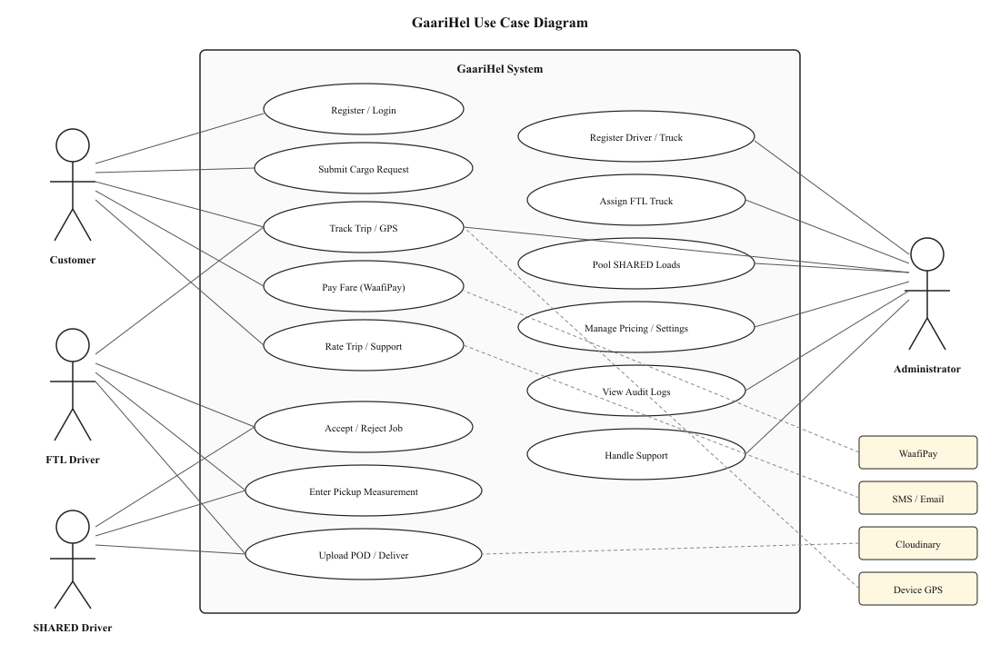
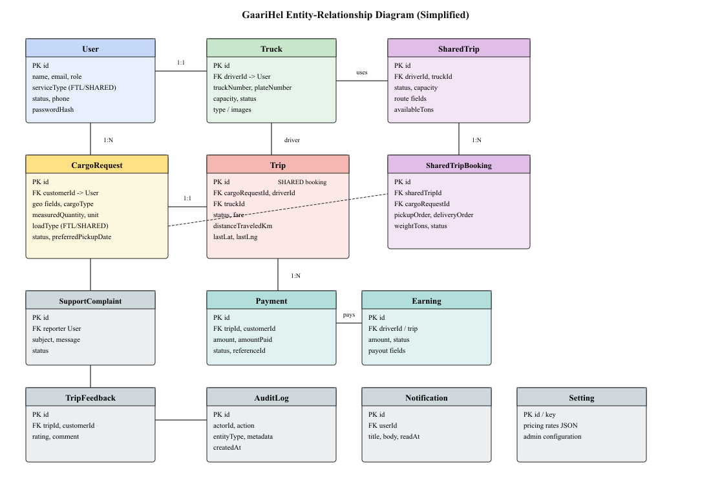

APPENDIX
UML DIAGRAMS
This appendix provides full-page copies of the main design diagrams referenced in Chapter III.
Actors: Customer, FTL Driver, SHARED Driver, Administrator. Supporting systems: WaafiPay, SMS/Email, Cloudinary, and device GPS. Use cases cover registration, booking, assignment, trip execution, payment, support, pricing, and audit logs.

Figure A1: Use Case Diagram of GaariHel
Simplified ERD of the PostgreSQL / Prisma schema used by GaariHel, including User, Truck, CargoRequest, Trip, SharedTrip, SharedTripBooking, Payment, Earning, AuditLog, and related support entities.

Figure A2: Entity-Relationship Diagram (ERD) of GaariHel database schema